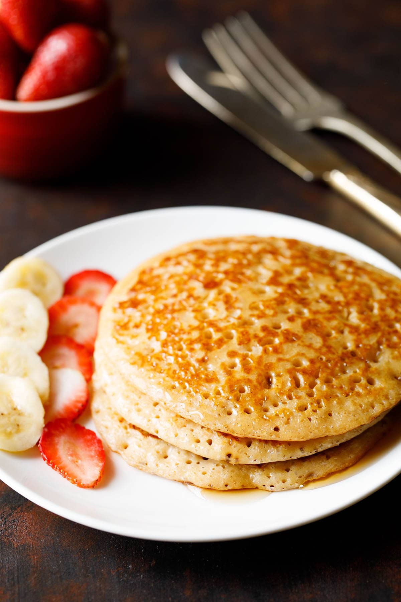
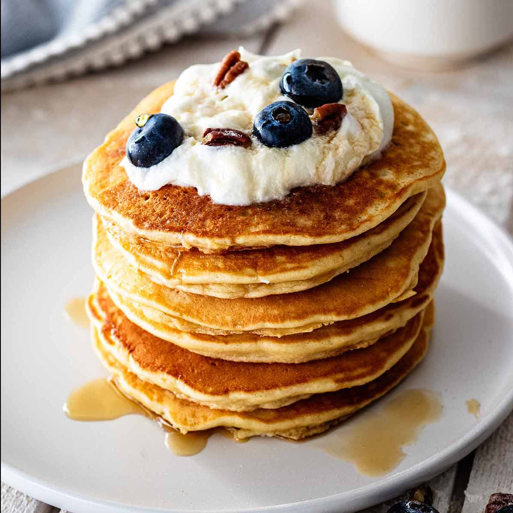

Pancakes Recipes
Fluffy, soft and tender this Eggless Pancakes recipe features whole wheat
flour, milk, sugar and flavorings for a healthy and delicious breakfast
treat. Here you’ll find step-by-step instructions with photos and a video
for how to make the easiest and best pancake recipe without eggs.

Ingredients
- 1 cup whole wheat flour
- 1 pinch salt
- 1 teaspoon baking powder leveled, aluminum free
- 1/4 teaspoon ground cinnamon (cinnamon powder)
- 3 teaspoons sugar
- 1.5 cups whole milk or add as required
-
1 tablespoon butter ( unsalted or neutral flavored oil ), for pancake
batter
-
2 tablespoons butter ( unsalted or neutral flavored oil ), add as
required, for cooking pancakes
Instructions and Steps of how to make::
Mixing Dry Ingredients
-
In a mixing bowl first take whole wheat flour. If the wheat flour is
ground in a mill, then do sift the flour once or twice before using.
-
Add salt. Skip adding salt if using salted butter. Add sugar. You can
even add 1 to 2 teaspoons sugar or skip it entirely.
- Add baking powder and ground cinnamon.
-
With a wired whisk mix all the dry ingredients very well. Set aside.
Mixing Wet Ingredients
-
Take 1.5 cups milk in a saucepan. Keep the pan on a low to medium-low
flame and begin to heat milk. You can also use almond milk or soy milk.
-
When the milk is becoming hot do stir occasionally. Do not boil the milk
but let it only become hot. You should see some steam coming from the
milk.
-
When the milk becomes hot, add 1 tablespoon unsalted butter. You can
also use oil instead of butter. Use a neutral flavored oil.
- Mix the butter in the hot milk very well.
Making Eggless Pancake Batter
-
Then add this mixture to the dry ingredients in the bowl. With a wired
whisk mix very well.
-
Break lumps with whisk and make a smooth batter. A few tiny lumps are
alright in the batter.
-
The pancake batter is of a pourable consistency and not thick. If the
batter looks thick, then you can add
1/4 to 1/3 cup more of hot milk. Depending on quality and texture of
whole wheat flour more milk can be added.
- Set the pancake batter aside.
Making Whole Wheat Pancakes
-
Then heat a well seasoned heavy skillet or frying pan. Spread 1/2 to 1
teaspoon softened unsalted butter or oil on the pan.
-
With a ladle gently pour the batter. Do not spread the batter with the
ladle. The batter spreads on its own. You can even use a 1/4 to 1/3
measuring cup to pour the pancake batter.
- On a medium-low heat cook the pancake.
-
Cook it till you see bubbles forming on the surface of the egg free
pancake.
-
When the base looks crispy and golden, gently turn over the whole wheat
pancake.
-
Cook the second side also till golden. Then remove eggless pancake and
serve.
-
You can even stack these eggless pancakes in a casserole or roti basket
and then serve warm. Make remaining pancakes in batches this way.
-
To speed up the cooking of pancakes, you can opt to use a large frying
pan or use two skillets or frying pans.
Serve these fluffy eggless pancakes with fresh fruits or jam or whipped
cream or maple syrup or honey or chocolate syrup.

Go Back